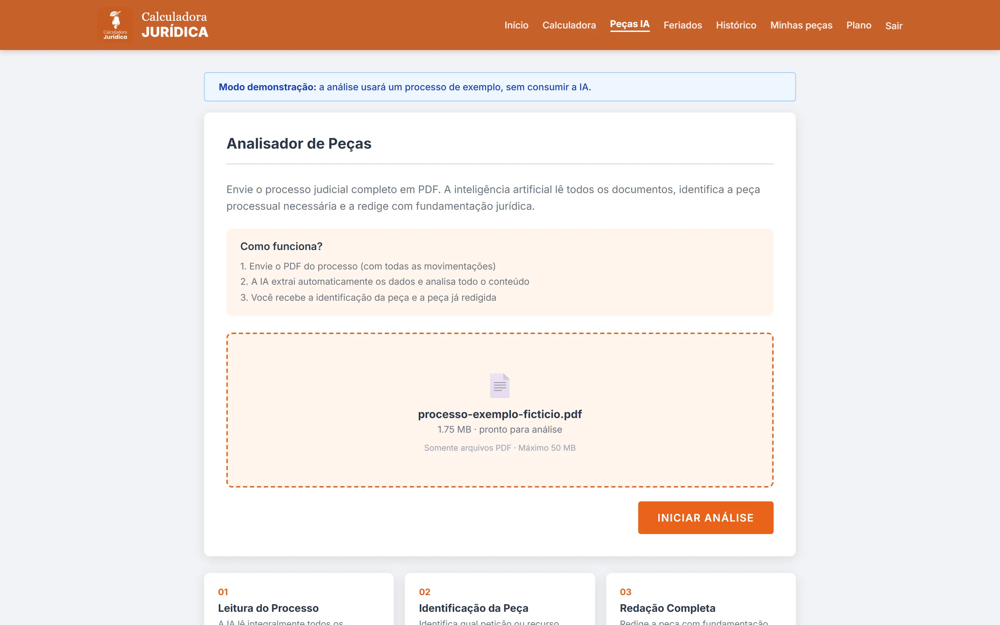
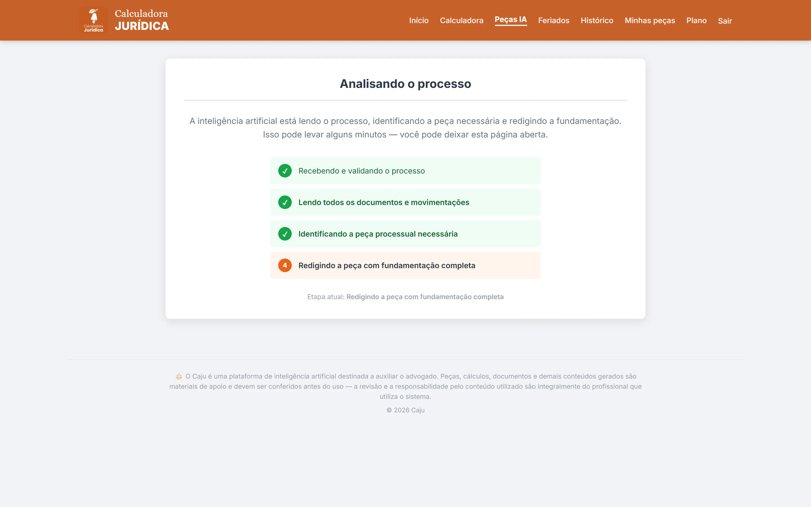
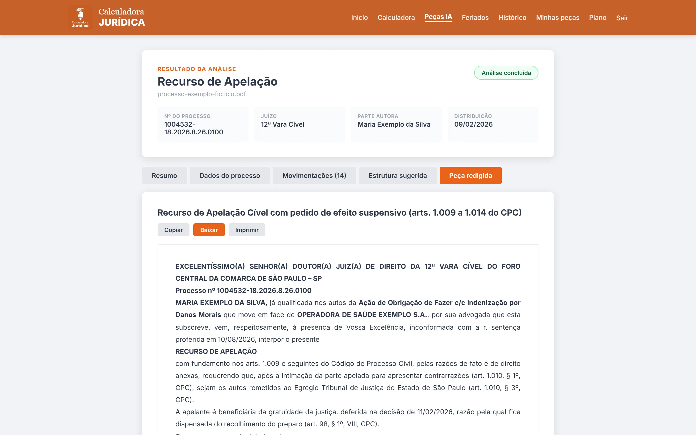
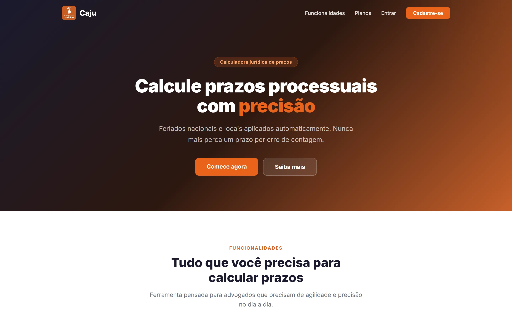
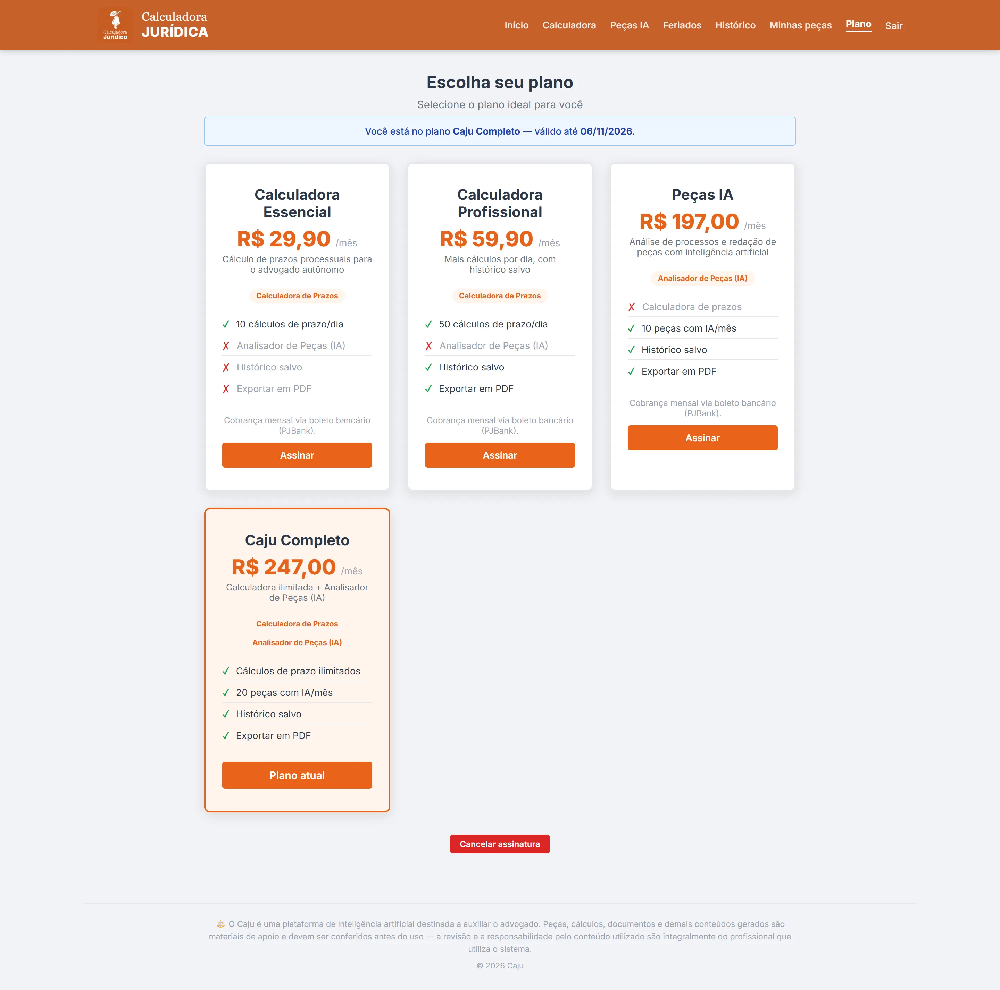

Estudo de caso 05 · Jurídico com IA
Caju
SaaS jurídico por assinatura que calcula prazos processuais com os feriados de cada município e lê o PDF do processo para indicar e redigir a próxima peça.






O problema
Contar um prazo em dias úteis exige conhecer os feriados nacionais, estaduais e municipais da comarca, e um erro na conta faz o advogado perder o prazo.
Ler um processo inteiro para decidir qual peça cabe e depois redigi-la leva horas. O Caju junta as duas tarefas num só login, com planos que liberam um módulo ou os dois.
O que construí
- Calculadora de prazos em dias úteis ou corridos por estado, município, tribunal e vara, com a lista dia a dia e os feriados que caem no período.
- Base de feriados dos 27 estados e dos 5.571 municípios do IBGE, atualizada por uma rotina mensal.
- Analisador de peças: o advogado envia o PDF, o sistema extrai os dados do processo, identifica a peça cabível e entrega a minuta, mostrando o progresso de cada etapa.
- Planos com limite diário de cálculos e mensal de peças, liberação por módulo e cobrança recorrente via PJBank.
- Histórico com exportação em PDF e painel administrativo de usuários, planos, assinaturas e pagamentos.
Decisões técnicas
IA em três etapas com saída estruturada
Usa a Responses API da OpenAI com GPT-5. O PDF vai inteiro como arquivo; as duas primeiras etapas devolvem JSON validado por um schema estrito e a terceira redige a peça. O código trata recusa do modelo, resposta incompleta e estouro do limite de tokens.
Processamento em segundo plano
A análise roda numa fila, com o worker e o servidor web no mesmo container sob supervisord. A tela acompanha cada etapa enquanto o advogado espera.
Modo demonstração
Sem chave de API, o sistema usa um caso embutido. Isso permite apresentar o produto e rodar localmente sem custo.
Deploy de uma imagem só
Docker Swarm com Traefik e certificado Let's Encrypt. Ao subir, o container espera o banco ficar pronto e roda migrations e seeds sozinho.
Protótipo antes do módulo
O analisador nasceu como protótipo em React e tRPC, com suporte a Claude e OpenAI. Antes disso, um experimento chamado Themis IA testou leitura de PDF e redação em streaming com Claude. Só depois a ideia virou módulo do produto em Laravel.
Em números
Stack
- PHP 8.4
- Laravel 11
- Blade
- Alpine.js
- Tailwind
- MySQL 8.4
- OpenAI Responses API
- Claude
- dompdf
- Docker Swarm
- Traefik
- supervisord